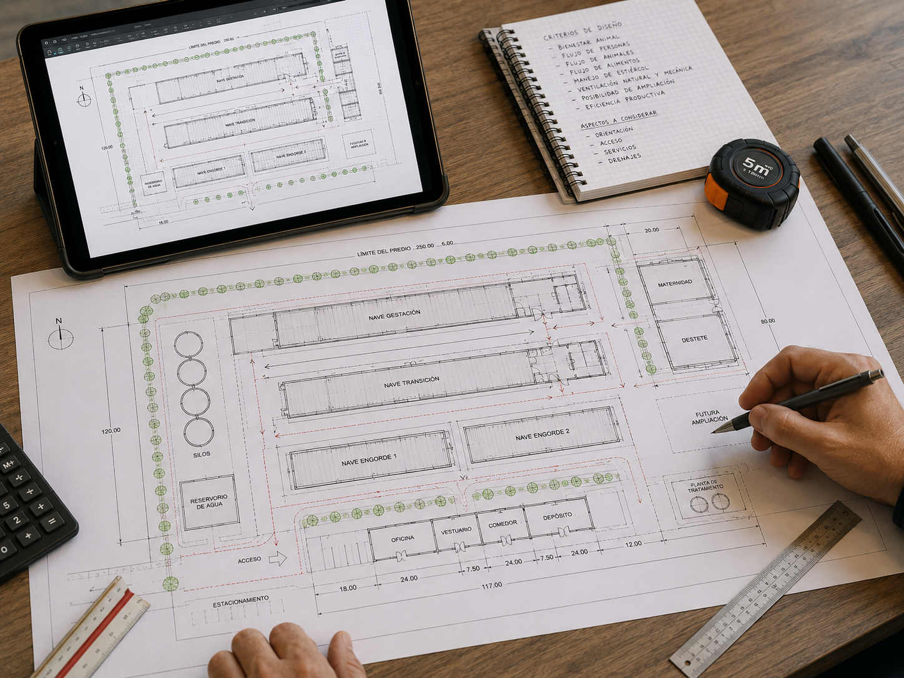

Soluciones profesionales para granjas de gallinas ponedoras. Diseño, instalación y equipamiento para sistemas avícolas modernos.
Consultanos por tu proyecto avícolaEquipamiento diseñado para cada fase del sistema productivo.
Equipamiento diseñado para el desarrollo inicial de las pollitas en sus primeras semanas de vida.
Infraestructura adaptada para un crecimiento uniforme y saludable de las aves.
Sistemas optimizados para maximizar la postura y mejorar la calidad del huevo.
Equipamiento diseñado para optimizar la eficiencia productiva, el bienestar animal y el manejo dentro de granjas de ponedoras.

Sistemas automáticos que permiten una distribución uniforme del alimento y mejor conversión alimenticia.

Sistemas tipo nipple que garantizan higiene, disponibilidad constante de agua y menor contaminación.

Diseñados para facilitar la postura y recolección de huevos, reduciendo roturas y pérdidas.

Control ambiental mediante ventiladores, extractores y paneles evaporativos.
Algunos de los equipos más utilizados en granjas de gallinas ponedoras.

Distribución uniforme del alimento en toda la nave.

Silos metálicos para almacenamiento seguro del alimento.

Jaulas o aviarios diseñados para optimizar la producción de huevos.

Bandas transportadoras para recolección eficiente de huevos.

Control ambiental que mejora bienestar y productividad.

Soluciones para optimizar procesos y garantizar sanidad en la granja.
Acompañamos tu proyecto desde el diseño hasta la puesta en marcha de la granja.

Planificación y diseño de instalaciones avícolas adaptadas a cada sistema productivo.

Montaje profesional de sistemas avícolas dentro de las instalaciones.

Construcción y adecuación de galpones avícolas para sistemas de producción modernos.